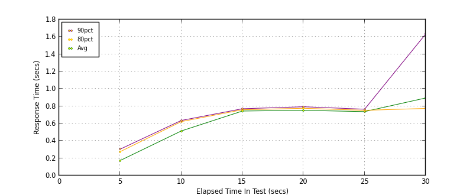
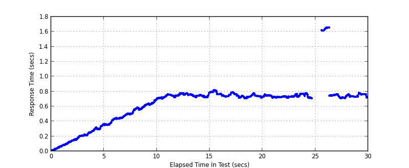
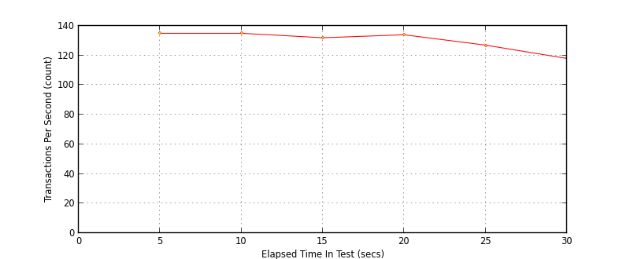

Performance Results Report
Summary
transactions: 4019
errors: 36
run time: 30 secs
rampup: 10 secs
test start: 2013-12-17 16:55:39
test finish: 2013-12-17 16:56:09
time-series interval: 5 secs
workload configuration:
| group name | threads | script name |
|---|
| user_group-1 | 100 | read_user.py |
All Transactions
Transaction Response Summary (secs)
| count | min | avg | 80pct | 90pct | 95pct | max | stdev |
|---|
| 4019 | 0.007 | 0.628 | 0.757 | 0.769 | 0.787 | 1.659 | 0.276 |
Interval Details (secs)
| interval | count | rate | min | avg | 80pct | 90pct | 95pct | max | stdev |
|---|
| 1 | 680 | 136.00 | 0.007 | 0.173 | 0.275 | 0.304 | 0.336 | 0.362 | 0.100 |
| 2 | 676 | 135.20 | 0.350 | 0.514 | 0.622 | 0.635 | 0.656 | 0.705 | 0.098 |
| 3 | 663 | 132.60 | 0.702 | 0.744 | 0.759 | 0.770 | 0.775 | 0.785 | 0.019 |
| 4 | 672 | 134.40 | 0.709 | 0.752 | 0.776 | 0.793 | 0.800 | 0.818 | 0.027 |
| 5 | 635 | 127.00 | 0.707 | 0.737 | 0.752 | 0.765 | 0.769 | 0.780 | 0.017 |
| 6 | 592 | 118.40 | 0.707 | 0.894 | 0.774 | 1.633 | 1.654 | 1.659 | 0.337 |
Graphs
Response Time: 5 sec time-series

Response Time: raw data (all points)

Throughput: 5 sec time-series
Custom Timer: get_tweets
Timer Summary (secs)
| count | min | avg | 80pct | 90pct | 95pct | max | stdev |
|---|
| 3915 | 0.007 | 0.628 | 0.757 | 0.769 | 0.787 | 1.658 | 0.277 |
Interval Details (secs)
| interval | count | rate | min | avg | 80pct | 90pct | 95pct | max | stdev |
|---|
| 1 | 678 | 135.60 | 0.007 | 0.173 | 0.275 | 0.303 | 0.336 | 0.362 | 0.100 |
| 2 | 675 | 135.00 | 0.350 | 0.513 | 0.622 | 0.635 | 0.656 | 0.705 | 0.098 |
| 3 | 663 | 132.60 | 0.702 | 0.744 | 0.759 | 0.770 | 0.775 | 0.785 | 0.019 |
| 4 | 672 | 134.40 | 0.709 | 0.751 | 0.775 | 0.793 | 0.799 | 0.818 | 0.027 |
| 5 | 635 | 127.00 | 0.707 | 0.737 | 0.752 | 0.766 | 0.769 | 0.780 | 0.017 |
| 6 | 592 | 118.40 | 0.707 | 0.896 | 0.776 | 1.633 | 1.654 | 1.658 | 0.338 |
Graphs
Response Time: 5 sec time-series
Response Time: raw data (all points)

Throughput: 5 sec time-series
